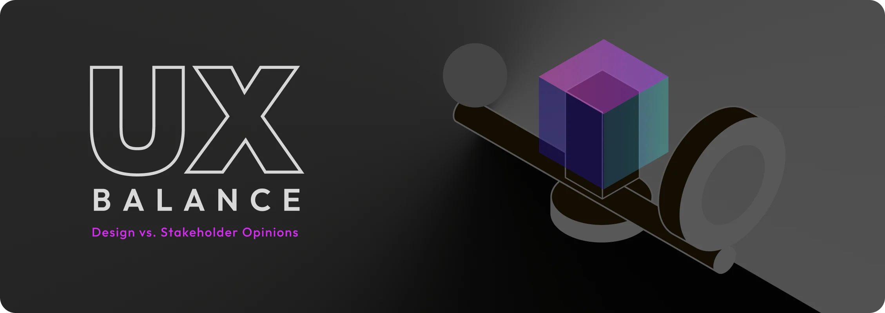
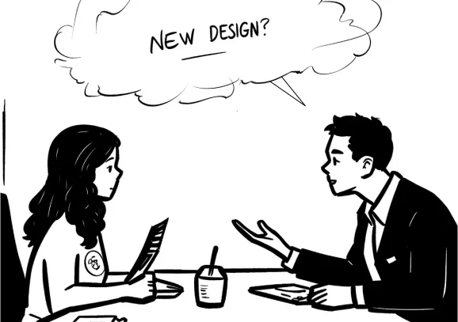

Articulating design decisions: the key to better UX collaboration
A well-thought-out design can still fail if the reasoning behind it isn’t communicated. First published on Peepal Design.

As UX designers, crafting user-friendly and visually appealing designs is only half the job. The other half—and often the most challenging part—is articulating design decisions to stakeholders, developers, product managers, and clients. A well-thought-out design can still fail if the reasoning behind it isn’t effectively communicated.
There is no U or X in a Team
We imagine perfect collaboration as different opinions coming together to give the best possible solution for the product. But as we all know it is very difficult to have everyone on the same page as it takes a lot of time and effort to do so.
Everyone in the team has their opinions about design. If your idea as a designer is not approved then often we tend to become defensive and that leads to an unfavourable outcome. The mood of the meeting should not dictate the user experience of the product.
The nature of UX design is that whatever we do is exposed to everyone and that’s one reason everyone is subject to having their opinions. It is like everyone has their own likes and dislikes about music even though they don’t know how to play the instrument. Since everyone has an opinion about the design, what comes out of these collaborative meetings is a mob mentality without proper communication.
What are common challenges we as a designer face while articulating design decisions for our products?
The CEO button: The CEO button is an unusual or otherwise unexpected request from an executive to add a feature that completely destroys the balance of a project and undermines the very purpose of a designer’s existence.
Home page syndrome: The home page syndrome is a condition where everyone fights for the visibility of their team’s work on the homepage. If it ain’t on the homepage it’s not existent. It also includes features which are not doing well in the background brought to the homepage to get better light and visibility.

Why articulating design decisions matters
Design doesn’t exist in a vacuum. Every design decision we make—from the layout of a dashboard to the color of a button—has a purpose, whether it’s improving usability, adhering to brand guidelines, or meeting business goals. However, stakeholders often see only the result, not the thought process behind it. Clearly explaining your decisions helps:
- Build credibility: When stakeholders understand the rationale behind a design, they’re more likely to trust your expertise.
- Avoid subjective feedback: Without proper explanation, feedback often turns into a matter of personal preference. Clear articulation shifts the conversation from “I don’t like this color” to “Does this color improve accessibility and brand consistency?”
- Ensure alignment: A shared understanding of design choices ensures everyone is aligned on goals, whether they’re user-centered, business-driven, or both.
Strategies for articulating design decisions
1. Ground decisions in user needs
Start by linking your design choices to real user problems. Use research data, user personas, and feedback to back up your decisions. For example:
“We chose this layout because user testing showed it significantly reduced task completion time.”
By tying decisions to user outcomes, you show that your design isn’t based on assumptions but on evidence.
2. Relate to business goals
Stakeholders care deeply about metrics like engagement, retention, and conversion. Whenever possible, frame your design choices in terms of how they impact these goals.
“This CTA placement increases visibility, which can lead to higher click-through rates, supporting the idea of quicker navigation.”
3. Use the language of your audience
Adapt your language depending on who you’re speaking to. When discussing with developers, focus on technical feasibility and consistency with design systems. For business stakeholders, highlight ROI and user satisfaction. Keep jargon to a minimum unless you’re speaking to fellow designers.
4. Show, don’t just tell
Visual aids—wireframes, prototypes, and user flows—help bring your explanations to life. Annotate designs to highlight key elements and explain how they support user tasks or business objectives. A picture is worth a thousand words, but a well-explained picture is worth even more.
5. Be open to feedback
Articulating design decisions isn’t about defending your choices at all costs. It’s about facilitating a productive dialogue. Be open to feedback, but guide the conversation back to user-centered goals.
“That’s an interesting suggestion. Let’s see how it aligns with our requirements.”
Common pitfalls to avoid
- Overloading with detail: While it’s important to explain your choices, overwhelming your audience with every minor decision can dilute your message. Focus on key decisions that directly impact the project goals.
- Getting defensive: Stakeholders may question your design. Stay calm, listen carefully, and respond with clarity. Defensiveness shuts down dialogue.
- Ignoring the bigger picture: Don’t get so caught up in pixel-perfect details that you lose sight of the broader goals.
Conclusion
Articulating design decisions is a skill every UX designer can use to buy peace for themselves. It’s not just about defending your work—it’s about fostering collaboration, ensuring alignment, and ultimately creating better products. By grounding decisions in user needs, tying them to business goals, and communicating effectively, designers can bridge the gap between design and the broader team, paving the way for successful and desired outcomes.
Remember: great design speaks for itself, but a great designer knows how to make it heard.